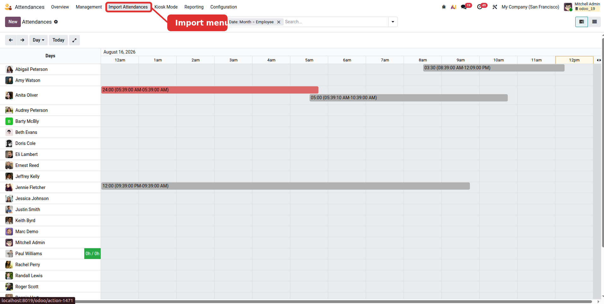
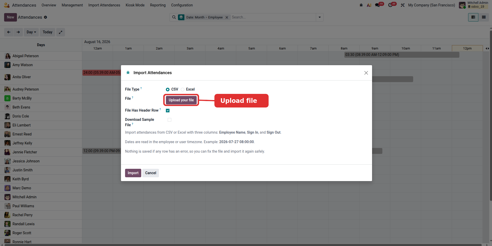
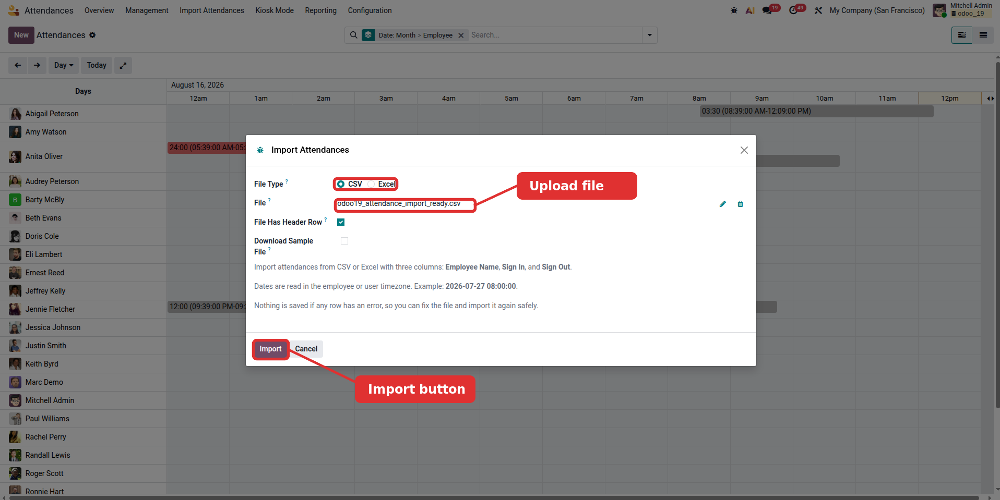
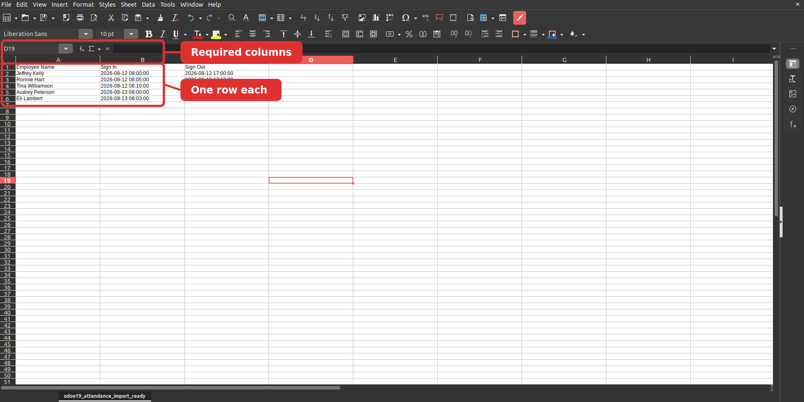
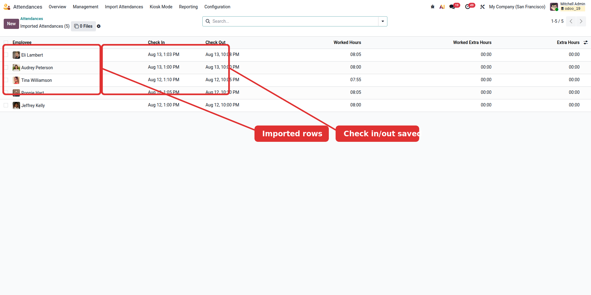

Fingerprint machines, face readers, and RFID gates often export monthly attendance files. This module turns those files into Odoo attendances in one clean import flow, with validation before anything is saved.
Import CSV, xlsx, or old xls attendance files from common attendance devices.
Employee Name, Sign In, Sign Out. One row creates one attendance.
Download a ready CSV or Excel sample directly from the import wizard.
If any row has an error, nothing is saved and the row is named.
Go to Attendances, then Import Attendances.
Download a CSV or Excel template if you need the exact format.
Choose CSV or Excel, upload the export, and confirm header row.
The imported attendances open in a list after the file is saved.
The import wizard is available from the Attendances top menu.

Users can download a CSV or Excel sample from the same wizard before importing real data.

Pick the file type, upload the file, and keep File Has Header Row enabled when the first row contains titles.

Three columns are enough: Employee Name, Sign In, and Sign Out. Dates can follow common device export formats.

After a successful import, Odoo opens the attendance records created by the file.

Employees are matched by name. If a name cannot be found, or if it matches more than one employee, the import stops instead of guessing.
Times in the file are treated as local times for the employee, with the importing user's timezone as the fallback. Odoo then stores them in the standard attendance format.
The whole file is checked before the import is committed. A missing check in, missing check out, invalid date, sign out before sign in, or overlapping attendance prevents partial data from being saved.
Reading xlsx files requires the Python openpyxl library. Reading old xls files requires xlrd. The module can still import CSV files without those Excel libraries.
Depends on Attendances. No configuration screen is needed after installation.